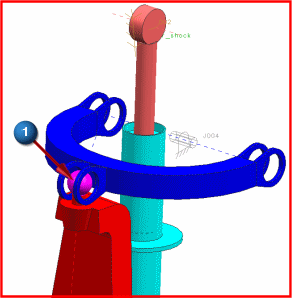
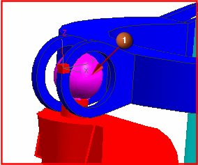
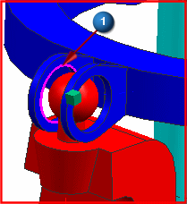

Create the second spherical joint

 Shaded with Edges (View toolbar, Rendering Style Drop-down list)
Shaded with Edges (View toolbar, Rendering Style Drop-down list)
The Joint dialog box is still open from the previous step.
-
Type
Spherical

-



-
 Arc/Ellipse/Sphere Center (Specify Origin)
Arc/Ellipse/Sphere Center (Specify Origin)
-


This selection sets the origin of the spherical joint at the center of the ball.
-
 Inferred Vector (Specify Vector)
Inferred Vector (Specify Vector)
-
Type Filter
Edge
Tip
The Type Filter
 is located on the Selection Bar in the toolbar area.
is located on the Selection Bar in the toolbar area.
-
(edge of hole in upper arm)

-
Base
-
 Select Link
Select Link -
(anywhere on upper arm)

-
Apply
Leave the Joint dialog box open for the next step.